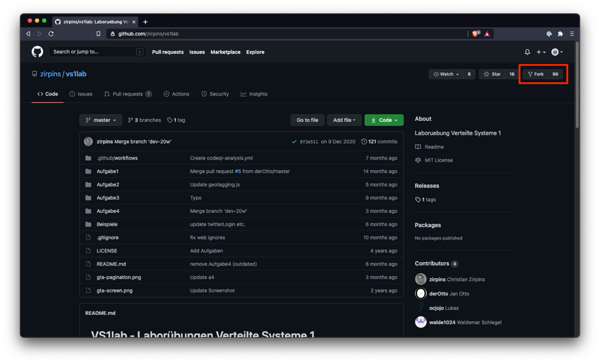
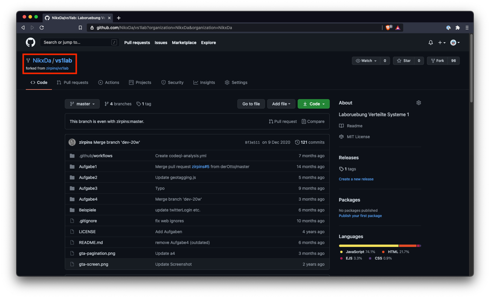
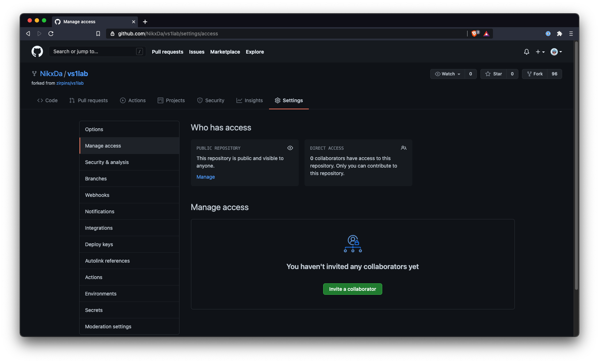
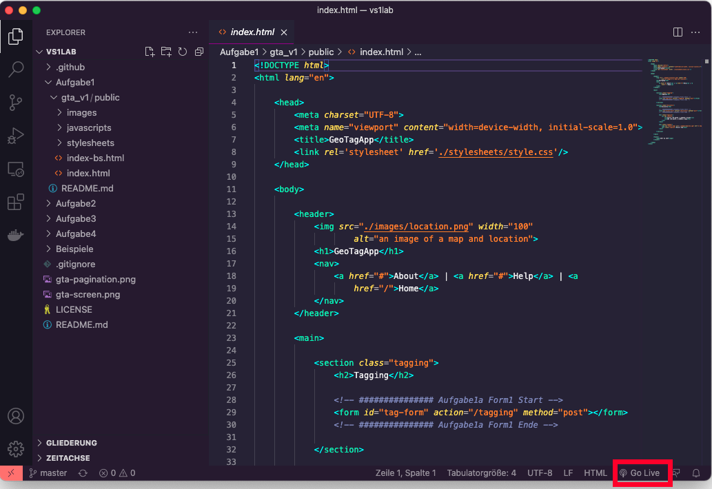
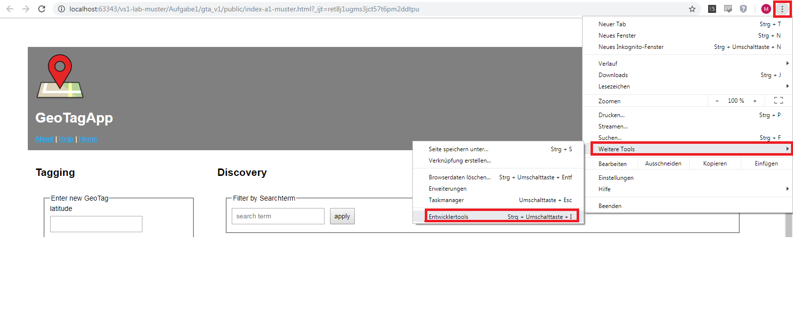
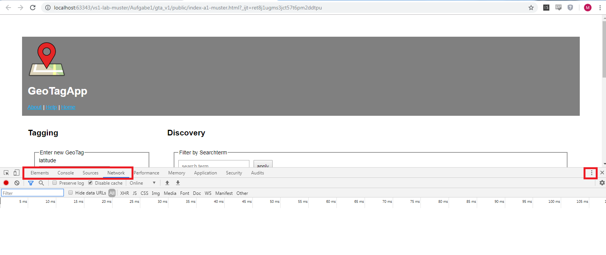
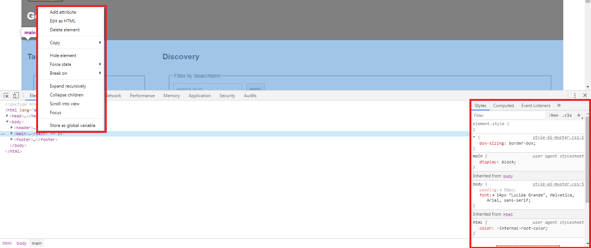
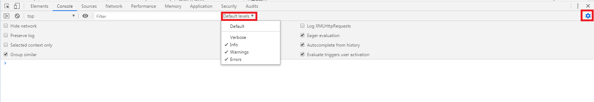
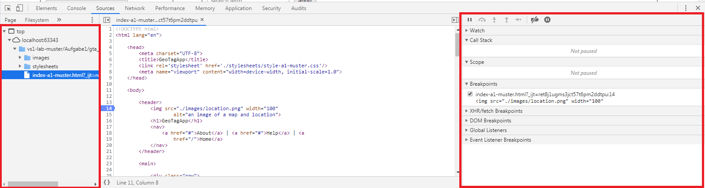
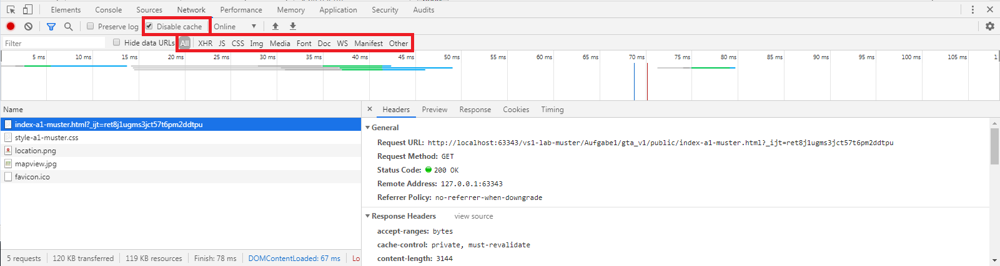

Tools
Git
Git ist ein Versionierungssystem für Dateien und Ordner in einem Projekt. Das Repository für Verteilte Systeme 1 finden Sie auf GitHub: https://github.com/zirpins/vs1lab
Im Folgenden sind Schritte beschrieben, die Sie zur Nutzung von Git und GitHub für Verteilte Systeme 1 nutzen können. Wichtig: Es besteht keine Verpflichtung zur Nutzung von Git für die Bearbeitung der Aufgaben. Wir empfehlen aber dennoch die Verwaltung via Git, da Kollaboration und Versionierung dadurch erheblich erleichtert werden.
Git kann auch lokal zur Versionierung genutzt werden. Hierzu ist kein Account notwendig.
Was ist Versionskontrolle?
Versionskontrolle ist ein System, dass es erlaubt, an Programmen zusammenzuarbeiten, die Entwicklung besser nachzuverfolgen und viele weitere Dinge wie Continous Integration ermöglicht.
Bei der Versionskontrolle erstellt man immer einmal wieder einen Snapshot des Projekts, gennant Commit. Diese Commits bilden einen Zeitstrahl, genannt Branch.
Begriffe
| Begriff | Erklärung |
|---|---|
| Repository | Ein Projekt, das mit Git verwaltet wird |
| Commit | Ein Snapshot des Projekts |
| Branch | Zeitstrahl aus Snapshots (stark vereinfacht) |
| Remote | Anderer Computer der eine Kopie des Repository besitzt |
| Push | Commits auf einen Branch auf einer Remote übertragen |
| Pull | Commits von einer Remote auf einen Branch auf dem eigenen Computer Übertragen |
| Clone | Ein Repository von einer Remote auf den eigenen Computer kopieren |
| Fork | Eine Kopie eines Repository die unabhängig vom Original weiterentwickelt wird |
| Fork | Zwei Branches zusammenführen |
| Fetch | Informationen über eine Remote einholen |
| Checkout | Die Arbeitsversion des Projekts auf einen bestimmten commit oder branch setzen |
Visualisierung

Beispiel
Alice und Bob Arbeiten am gleichen Programm. Zuerst klonen sie beide eine Kopie des Repository auf ihren Computer (haben dann also GitHub als Remote eingetragen). Alice programmiert ein neues Feature und macht dabei ein paar Commits. Diese Pusht sie dann auf GitHub. Bob sieht per git fetch, dass Alice das Programm weiter entwickelt hat und synchronisiert seinen main branch per git pull mit GitHub. Nun nehmen Bob und Alice beide gleichzeitig Änderungen vor und erstellen dabei Commits. Alice pusht ihre Commits auf GitHub. Kurz danach will Bob ebenfalls seine Commits pushen, allerdings bekommt er statdessen eine Warnung von Git. Würde Bob stur auf seine Zeitleiste bestehen würde er damit Alice's Änderungen überschreiben. Deshalb muss er zuerst pullen. Git versucht dabei per git merge, automatisch einen Merge-Commit zu erstellen, der sowohl Bobs als auch Alice's Änderungen enthält. In der Regel funktioniert dies auch. Sollte es dazu kommen, dass Bob und Alice die gleiche Zeile bearbeitet haben entsteht ein Merge Konflict und der Nutzer muss entscheiden welche Version der Zeile er behalten möchte. Nachdem Bob einen Merge-Commit erstellt hat, der die Arbeit beider enthält pusht er diesen auf GitHub, Alice pullt den Merge-Commit von GitHub um auf dem gleichen Stand zu sein wie Bob und beide arbeiten weiter. Um dauerhafte Merge-Konflikte zu vermeiden können Bob und Alice auch auf separaten Branches arbeiten, die nur selten gemerged werden (Siehe Visualisierung).
Vereinfachungen
Diese Erklärung ist stark vereinfacht. Ein branch ist technisch gesehen nur ein Pointer, die Reihenfolge der Commits ist stattdessen in den Commits gespeichert, die eine linked list bilden. Ein Commit ist auch keine vollständige Kopie des Projekts, stattdessen enthält ein Commit nur die Änderungen, die seit dem letztden Commit gemacht wurden (wodurch git sehr speichereffizient ist)
Installation von Git
Windows
https://git-scm.com/download/win
Mac
xcode-select —install
Linux
Ubuntu
sudo apt install git
Arch
sudo pacman -S git
Konfiguration
Git nutzt zur Identifizierung eines Nutzers dessen Namen sowie Email-Adresse. Nach erfolgreicher Installation können Sie in der Kommandozeile Ihres Computers folgende Befehle ausführen, um Git zu konfigurieren:
git config --global user.name "John Doe"
git config --global user.email johndoe@example.org
Authentifizierung bei GitHub
Ein GitHub Account ist in der Regel sehr sicherheitskritisch, da Hacker mit bearbeitungszugriff Schadcode in ein Programm einschleusen könnten. Aus diesem Grund lässt GitHub keinen Log-in per Passwort aus der Kommandozeile mehr zu und erfordert stattdessen Authentifizierungsmethoden mit höherer Sicherheit wie ssh-keys oder personal access tokens.
Umsetzung für das Labor
Forken
Beim Forken wird eine Kopie des Repository angelegt, welches dem eigenen Nutzer gehört. In diesem Repository können dann Änderungen vorgenommen werden, ohne das originale Repository von Herrn Dr. Zirpins zu verändern.
Melden Sie sich bei GitHub an und navigieren Sie zum Repository „vs1lab" (Link siehe oben).
Klicken Sie dann auf den Knopf „Fork":

Nach dem erfolgreichen „Forken" finden Sie eine Kopie des Repositories unter Ihrem eigenen Nutzer (Klick auf Profilbild rechts oben, dann „Your repositories"):

Nun muss das Repository noch lokal verfügbar gemacht werden. Hierfür kann der Befehl
git clone <URL>
verwendet werden. Öffnen Sie eine lokale Kommandozeile und navigieren Sie in den Ordner, in dem Sie das Repository lokal ablegen möchten. Führen Sie dann den Befehl mit der URL zu Ihrem Fork aus:
git clone https://github.com/<username>/vs1lab
Nach dem erfolgreichen Klonen des Repositories auf den lokalen Rechner kann nun problemlos (auch mit mehreren Teammitgliedern) parallel am Projekt gearbeitet werden.
Gemeinsam an Aufgaben arbeiten
Damit mehrere Mitglieder Zugriff auf ein GitHub-Repository haben, muss dieser zuerst konfiguriert werden. Gehen Sie hierzu in GitHub auf den Tab „Settings" Ihres Repositories und laden Sie unter dem Punkt „Manage access" Ihre Teammitglieder ein:

Ihre Teammitglieder befolgen dann dieselben Schritte wie aus Abschnitt 2, um das Repository auf ihren lokalen Rechner zu klonen.
Um parallel an Code zu arbeiten, ohne sich gegenseitig zu stören kann auf separaten Branches gearbeitet werden.
Der Hauptbranch bei Git heißt meist „master" (in neueren Repositories auch „main"). Die Branches selbst können frei benannt werden.
Ein neuer branch kann mit
git checkout -b <branch-name>
(Der Befehl "checkout" wird zum Wechseln von Branches/Commits verwendet. Das Argument „-b" erzeugt dann einen neuen Branch.)
Neue Änderungen werden in einem Commit gespeichert.
# Alle Änderungen aus allen Dateien für den nächsten Commit vormerken
git add --all
# oder um nur eine datei vorzumerken
git add pfad/zur/datei.js
# Commit erstellen
git commit -m "Beschreibung der Änderung"
# Commit auf die GitHub remote übertragen
git push
Möglicherweise beschwert sich Git, dass kein Upstream-Branch existiert. In diesem Fall müssen Sie explizit angeben, auf welchen Branch der Push ausgeführt werden werden soll. Für unsere Fälle gibt es keinen Grund, nicht einfach denselben Branch zu verwenden. Der Push-Command lautet dann:
# origin ist der standard remote name
git push --set-upstream origin <branch-name>
Commits von GitHub können mit git pull auf den eigenen branch übertragen werden
Um Änderungen von einem anderen branch auf den momentanen branch zu übertragen kann der befehl
git merge <branch name>
Ein Wort zum Git Tooling
Neben der Kommandozeile, die wir hier kennengelernt haben, gibt es auch viele grafische Benutzeroberflächen, mit denen dieselben Abläufe erreicht werden können. VSCode und Webstorm beispielsweise binden direkt eine Git-Integration ein. Es gibt auch diverse standalone Git Oberflächen wie Gitahead, Sublime Merge und GitKraken. Die Wahl des Werkzeuges bleibt letztendlich Ihnen überlassen.
Hilfreiche Links
Der einfache Einstieg in Git:
https://rogerdudler.github.io/git-guide/index.de.html
Kostenfreier Kurs:
https://www.udacity.com/course/version-control-with-git--ud123
Git Dokumentation: https://git-scm.com/doc
Fork synchronisieren im Detail:
https://docs.github.com/en/github/collaborating-with-issues-and-pull-requests/syncing-a-fork
VS code
Allgemeines
VS-Code, Visual Studio Code oder Code-OSS * ist eine offene Entwicklungsumgebung von Microsoft (nicht zu verwechseln mit Visual Studio). Das Tool ist sehr universell ausgelegt und auf keine bestimmte Programmiersprache oder Technologie zugeschnitten. Stattdessen kann der Support für Sprachen oder Features über Extensions installiert werden. So wird VS code zur IDE für Java, C, Web, Rust, Latex etc.
VS Code vs Code-OSS
Das Produkt VS Code ist eine modifizierte Version des Open-Source Editors Code-OSS. Bei Code-OSS fehlt das Microsoft-Branding, das Sammeln von Persönlichen Daten und aus unerklärlichen Gründen die Adresse des Extension-Marketplace. Diese Kann allerdings manuell hinzugefügt werden
{kind=link}
Installation
Windows & Mac
Das Setup kann unter der folgenden Adresse heruntergeladen werden: https://code.visualstudio.com/
Linux
Ubuntu
sudo snap install --classic code
Arch
git clone https://aur.archlinux.org/visual-studio-code-bin.git
cd visual-studio-code-bin
makepkg -si
Tips
Set up für das labor
Nach dem klonen des Forks von GitHub kann der Ordner mit Ctrl+K - O (Ctrl gedrückt halten und währenddessen hintereinander k und o drücken) in vs code geöffnet werden. Wenn der Ordner das erste mal geöffnet wird muss er als vertrauenswürdig bestätigt werden.
Nützliche Shortcuts
| Keybind | Funktion |
|---|---|
| Ctrl+S | Speichern |
| Ctrl+P | Datei Fuzzy-Finder |
| Ctrl+Shift+P | Kommando Palette |
| Ctrl+R | Wechseln zwischen oft verwendeten Projekt Ordnern |
| Ctrl+Shift+I | Dokument formattieren (Super Hilfreich!!!!) |
Todo
noch mehr shortcuts
Extensions
Es gibt eine EJS extension, die die Arbeit mit EJS im Labor wesentlich vereinfacht.
Die Autocompletion lässt sich durch GitHub-Copilot oder TabNine (Bitte nur eine von beiden installieren) um einiges verbessern.
Sonarlint weist automatisch auf potentiell problematischen oder fehlerhaften Code hin und bietet lösungsansätze an.
Live server Mithilfe des Go Live Buttons unten rechts, der mit der Live Server Erweiterung installiert wurde, lässt sich ein Web-Server starten. Änderungen an den Projektdateien werden, sobald diese gespeichert wurden, sofort im Browser sichtbar.

Git
VS code hat eine gute Git-Integration, die pushen, commiten und das interaktive lösen von Merge-Konflikten erlaubt. Der Funktionsumfang kann mithilfe der extension GitLens auch erweitert werden.
Remote container
Die Remote Extension erlaubt es, sich mit einem Container (oder Server) zu verbinden und diesen als Entwicklungsumgebung zu nutzen. Wenn eine Verbindung zu einem Container besteht werden alle Dateien im VS Code Workspace im Container gespeichert und alle Programme, die VSC startet laufen im Container.
Installation

Nutzung


Die obigen Schritte laden automatisch das Passende Container-Image herunter, erstellen und starten einen Container, kopieren alle Dateien in den Container und Verbinden VS Code mit dem Container. VS code merkt sich das projekt und wird es auch nach einem neustart wieder im container öffnen. Sollte das nicht der Fall sein können Sie einfach die obigen schritte wiederholen. Die statuszeile zeigt, ob eine Verbindung zu einem Container besteht
Docker
Container
Die Nutzererfahrung von Containern lässt sich als "Virtuelle Maschinen aber nicht so langsam" beschreiben. Es sind isolierte Umgebungen, die ein eigenes Betriebssystem mitsamt den Programmen, die darin laufen enthalten.
Der Große Vorteil an Containern ist, dass sie sich als container images beliebig verbreiten lassen. Da ein Container sein eigenes Betriebssystem enthält ist garantiert dass er überall genau so funktioniert wie auch auf dem eigenen Computer.
Docker ist das meistgenutzte Programm und Format zum verwalten von Containern
Container Orchestration
Die Nutzung von Docker findet in der Produktion meist automatisiert durch Tools wie Kubernetes statt, die je nach bedarf Container anlegen, löschen oder neu starten.
Um die gute Performanz zu erreichen verwendet Docker einige Technologien, die nur im Linux Kernel vorhanden sind, weshalb Docker für Windows und Mac beide in einer virtuellen Maschine laufen müssen.
Installation
Linux
Arch Linux
sudo pacman -S docker
Ubuntu
sudo apt-get remove docker docker-engine docker.io containerd runc
sudo apt-get update
sudo apt-get install \
apt-transport-https \
ca-certificates \
curl \
gnupg \
lsb-release
curl -fsSL https://download.docker.com/linux/ubuntu/gpg | sudo gpg --dearmor -o /usr/share/keyrings/docker-archive-keyring.gpg
echo \
"deb [arch=amd64 signed-by=/usr/share/keyrings/docker-archive-keyring.gpg] https://download.docker.com/linux/ubuntu \
$(lsb_release -cs) stable" | sudo tee /etc/apt/sources.list.d/docker.list > /dev/null
sudo apt-get update
sudo apt-get install docker-ce docker-ce-cli containerd.io
Windows
Das Setup von Docker für Windows kann unter https://desktop.docker.com/win/main/amd64/Docker%20Desktop%20Installer.exe heruntergeladen werden.
Die virtuelle Maschine Diese allerdings mithilfe von WSL2 um eini
Mac
command -v brew || /bin/bash -c "$(curl -fsSL https://raw.githubusercontent.com/Homebrew/install/HEAD/install.sh)"
brew cask install docker
Nutzung
Es gibt eine Vielzahl von Möglichkeiten, Docker zu nutzen. Die
Standard-Installation von Docker kommt mit dem Terminal Command docker und es
sind interaktive terminal Oberflächen wie lazydocker verfügbar, allerdings gibt
es auch grafische Oberflächen wie die Docker extension für VS-Code, Docker
Desktop.
GUI vs Kommandozeile
Es ist zu empfehlen, zumindest ein wenig Erfahrung mit der Kommandozeile von Docker oder lazydocker zu haben, da Docker meist auf dem Server genutzt wird und Server in der Regel nur über die Kommandozeile bedient werden.
Debuggen in Google Chrome
Chrome, als auch weitere Browser, bieten eine Vielzahl von verschiedenen Entwicklertools an. Die Entwicklungstools werden mit F12 oder über
Einstellungen -> Weitere Tools -> Entwicklertools geöffnet.

Über die Tabs können die Verschiedenen Tools aufgerufen werden. Im rechten Bereich sind weitere Einstellungen wie die Ausrichtung der Tools möglich.

Elements
In Elements wird der aktuelle DOM Baum angezeigt und Chrome bietet verschiedene Möglichkeiten um den Baum zu manipulieren.
Mit einem Rechtsklick auf ein HTML Element wird die Option angezeigt.
Hier im Bild, im rechten Teil von Elements, werden die aktuellen Styles und weitere Einstellungen für eine Node angezeigt.
Im Styles Bereich können die vorhandenen CSS Einträge manipuliert oder es können eigene Regeln bzw. Attribute hinzugefügt werden.

Console
Gibt verschiedene Nachrichten des laufenden JS-Codes aus. Bei Fehlern im JS-Code, werden diese in der Console mit einem Stack-Trace ausgegeben. Auch einfache Informationen oder Warnungen werden dort ausgegeben.
Für die Console kann ein level angegeben werden, welches besagt, welche Nachrichten angezeigt werden.
Oben rechts befinden sich noch weitere Einstellungsmöglichkeiten für die Console
In der Console kann auch JS-Code ausgeführt werden.
Mit console.log() lassen sich aus dem Code Nachrichten und Werte ausgeben. Mit console.error() werden diese als Fehler formatiert und mit console.table() kann man sich die Werte eines Arrays formatiert ausgeben lassen.

Sources
In Sources werden alle geladenen Inhalte und die Debugging Übersicht angezeigt.
Durch das Öffnen einer Datei können Breakpoints gesetzt werden.
Alternativ kann man im Programmcode selbst (also in der IDE oder Editor) den
Befehlsaufruf "debugger;" hinzufügen um einen Breakpoint zu setzen.
Auf der rechten Seite befinden sich die bekannten Debugging-Möglichkeiten, wie zum Beispiel das Fortsetzen bis zum nächsten Breakpoint, Funktionsaufrufe zu überspringen, hinein oder heraus zu springen.

Network
Zeichnet den Netzwerkverkehr zwischen Webseite und Server auf. Es wird dabei der Request, Response Header und die benötigte Zeit aufgezeichnet. Auch der Response Body wird angezeigt und formatiert in der ab Preview angezeigt.
Es werden auch mehrere Filteroptionen angeboten, um einen Überblick beim Netzwerkverkehr zu haben.
Wichtig kann auch die Checkbox "Disable cache" sein, um mögliche
Fehler beim Entwickeln durch zu strenges Caching des Browsers zu
vermeiden.

Weitere Informationen findet ihr hier: https://developer.chrome.com/docs/devtools/